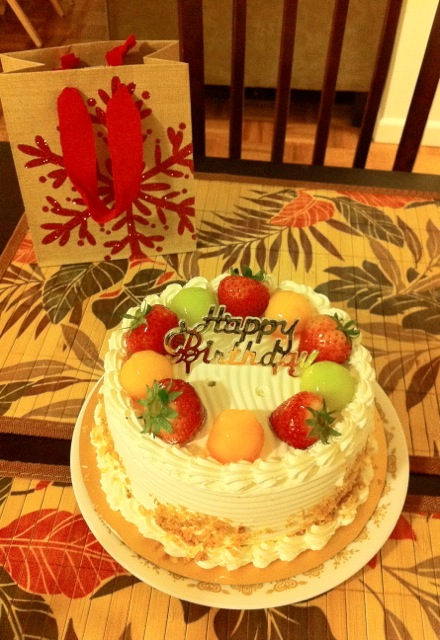
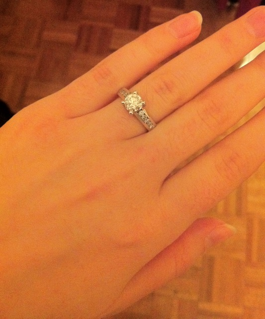

Our Proposal
For Emily's 28th birthday on December 16, 2010, Bert had told Emily that he would cook dinner for a quiet evening at home. Secretly, he also was planning to propose to her that night. Although Emily and Bert knew they would spend the rest of their lives together, they had not decided exactly when they would get engaged, so Emily had no idea what Bert had planned.
When Emily came home from work, Bert had dinner ready. They enjoyed a lovely meal together, but Bert seemed a bit rushed. When Emily was almost done eating, Bert asked, "Are you done yet?"
Emily replied, "No, not yet," wondering why Bert was so anxious to finish dinner.
A few minutes later, after the plates were cleared, Bert brought out a birthday cake from their favorite Chinese bakery and sang "Happy Birthday". They were too full to eat the cake then, so they moved on to presents.
{kind=link}
Bert brought two presents over to the table—one in a small gift bag decorated with a sparkly, red snowflake, and the other in a medium box. Although Emily had no idea Bert was going to propose, she started to feel butterflies in her stomach. Bert said to open the smaller gift first, so Emily reached into the snowflake bag and felt a small jewelry box. She thought, it might be a ring, but it also could be some beautiful birthday earrings.
Then Bert took the jewelry box from Emily, opened it, got down on one knee, and asked, "Will you marry me?"
{kind=link}
Emily immediately said yes, and there was much hugging and crying. She was completely surprised and so happy. The ring was exquisite. Oh, and the larger box you ask? It contained a MacBook Air! Best Birthday Ever!